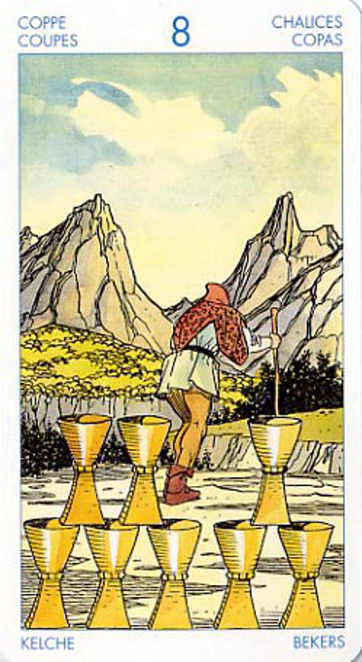

Восьмёрка Кубков
Одна из тех мудростей, которые даются нам нелегко - это знать, когда нужно покончить с той или иной ситуацией, разрешить ее. Мы осознаем, что иногда бывает так, что то, что раньше нам служило, теперь стало бесполезным. Поэтому уйти в сторону в данном случае означает не отказаться от одной идеи, а просто переключиться на другую. Не исключено, что вам надо взять передышку или отойти от дел, для того, чтобы накопить сил и посвятить себя тому, что вы считаете главной целью своей жизни.
Восьмёрка Кубков показывает, что мы должны покинуть привычное окружение, расстаться с людьми или вещами, к которым "прикипели сердцем", и отправиться в далёкий путь, в неведомое будущее.
"Тяжесть прощания" заключается в двух моментах: мы должны покинуть то, что нам дорого, и не знаем, что нас ожидает.
Это спокойное погружение в волны жизни и фатальное смирение с происходящим, основанное на понимании того, что жизненный процесс в целом мудрее притязаний отдельного человека.
В сфере человеческих отношений карта символизирует притирку друг к другу двух сильных индивидуальностей. Положительное действие восьмерки сказывается в гармоничном сочетании желаний и страстей с рассудком. Это ситуация, когда любовь не вредит делу, а деловые отношения - любви.
Ловушка - идти по пути наименьшего сопротивления. Удобство.
Низшее приносится в жертву во имя высшего.
Если вы гадаете на деловые отношения и вас интересует, как сложится дальнейшая судьба ваших проектов, то в этом случае Восьмерка Чаш - добрый знак. Вы без труда добьетесь осуществления задуманного, причем с помощью ваших коллег и знакомых.
Однако та же Восьмерка Чаш, выпавшая при гадании на отношения с партнером, предсказывает период охлаждения: эта карта - знак того, что все личные дела лучше отложить «на потом», до более удачного времени!
Данная карта может указывать на то, что вы боитесь вступать в тесные взаимоотношения, давать какие-либо обещания или же что вы избегаете проводить время в одиночестве. В качестве альтернативы в перевернутом положении эта карта иногда может означать эмоциональное истощение.
Карта может значить переоценку ценностей, и, следовательно, старое, неважное может быть отброшено, новое взято на вооружение.
В отрицательном значении:капризы, блажь, тяга к пустым развлечениям и тратам. Разочарование.